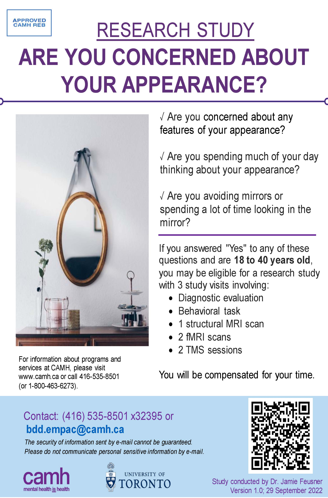

Exogenous Modulation of Visual Perception and Connectivity in Body Dysmorphic Disorder.
One of the main symptoms of body dysmorphic disorder (BDD) is a distorted perception of one's appearance. This causes emotional distress, can contribute to poor insight about the cause of one's problems, limits engagement in mental health treatment, and puts individuals at risk for relapse. This study aims to understand the effects of noninvasive brain stimulation in combination with a behavioral visual modulation technique on brain function and visual perception. This is an important step toward developing new treatment components for BDD.
Participation in this study involves 3 study visits within 4-10 days (no more than 8 hours in total). The informed consent discussion and visit 1 will be done online via WebEx, which is a secure videoconferencing platform, while the other two study visits will require in-person visits at Toronto Western Hospital. Participation in the study involves: The completion of clinical assessments and symptom rating scales, taking photographs of your face to be used in the study tasks, undergoing a structural MRI scan, performing behavioral tasks while undergoing two fMRI scans, and receiving two types of brain stimulation (TMS). You will be compensated for your time should you wish to participate and complete all study visits.
If you are interested in participating in this study, or if you would like to get more information, please contact the research team at bdd.empac@camh.ca
This study is supported by a grant from the US National Institutes of Health (NIH).